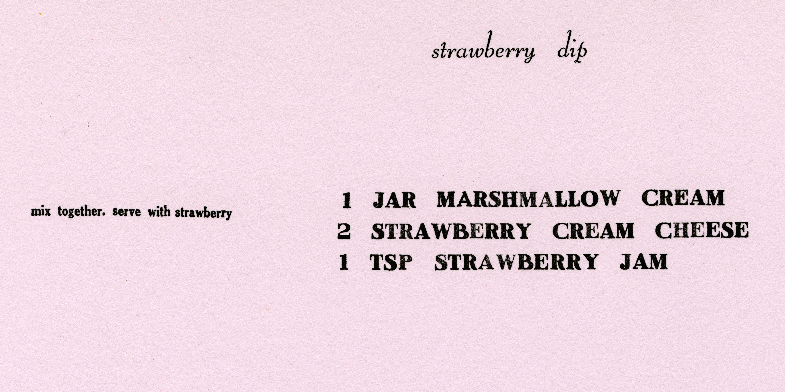
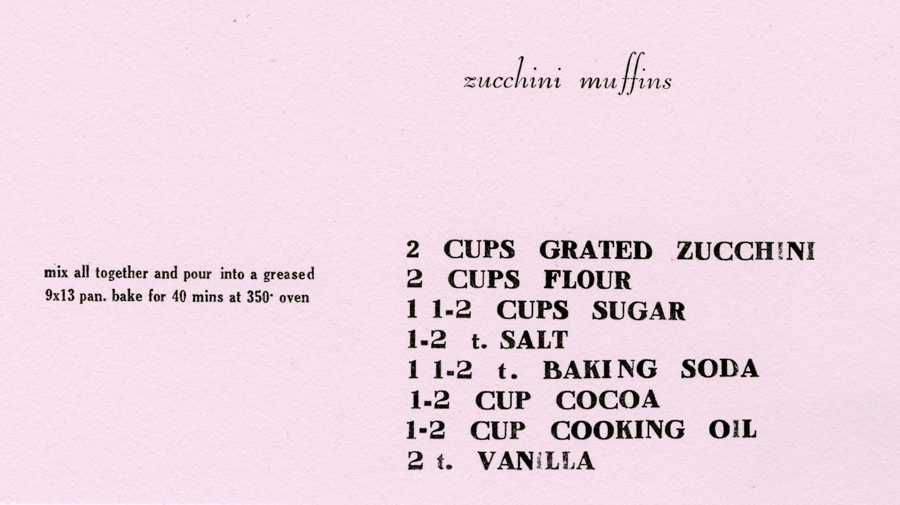
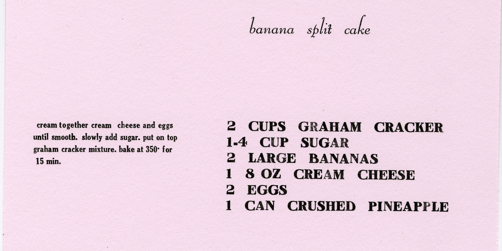
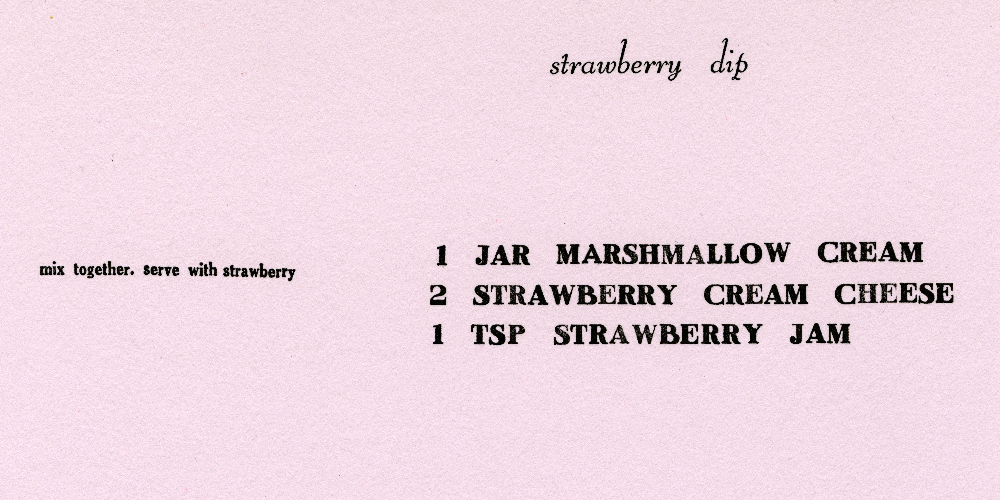
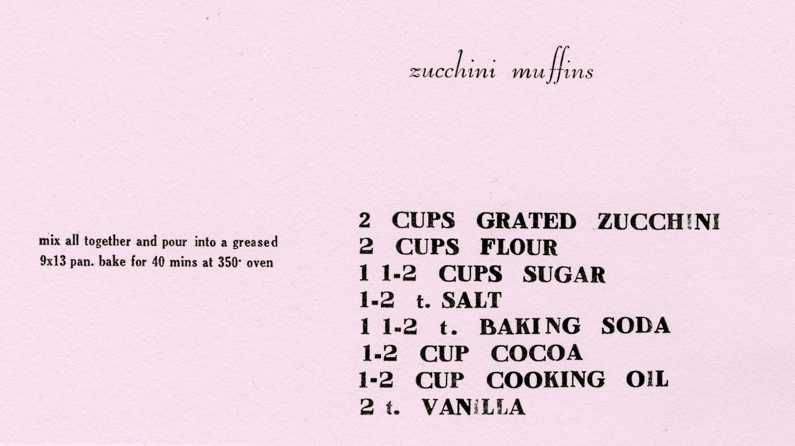
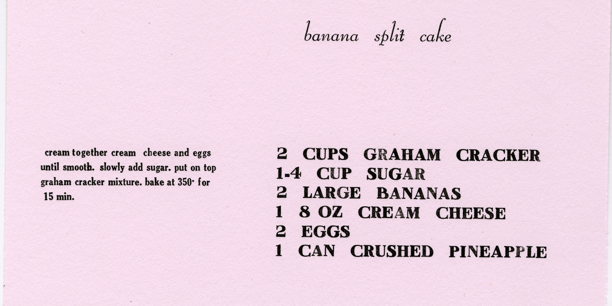

recipe note cards
One day while scanning through my grandma’s recipe cards, I noticed that they hold so much history and value, yet they are falling apart and barely legible. I wanted to take these recipes cards and transform them into something more precious, something that matches the integrity and familial traditions they carry. Using the letterpress, I created three different prints that showcase my grandma’s recipes using only 10 and 14 point type. I then sewed on a string border, to further convey the preciousness of the prints.